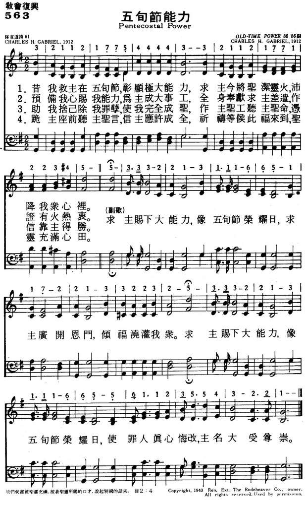

|
|
|
|
1 Lord, as of old at Pentecost Chorus: 2 For mighty works for Thee, prepare 3 All self consume, all sin destroy! 4 Speak, Lord! before Thy throne we wait,
|
563五旬节能力
1.昔我救主在五旬节，彰显极大能力，
求主今将圣洁灵火，沛降我众心里。 （副）求主赐下大能力，像五旬节荣耀日， 求主广开恩门，倾福浇灌我众。 求主赐下大能力，像五旬节荣耀日， 使罪人真心悔改，主名大受尊崇。 2.预备我心赐我能力，为主成大事工， 全身奉献求主差遣，作证有火热衷。 3.助我舍己除我罪孽，使我完全成圣， 作主圣工听主圣命，凭信靠主得胜。 4.跪主座前听主圣言，信主应许成全， 祈祷等候此福来到，圣灵充满心田。 |
|
https://www.mred365.cn/szxg/7566.html
 https://hymnary.org/hymn/BH2008/page/682
|
|
|
|
|

-

https://youtu.be/8zb45JS_cxE
| Text: | Pentecostal Power |
| Author: | Charles H. Gabriel |
| Tune: | OLD-TIME POWER |
| Composer: | Charles H. Gabriel |

Tune Information
| Title: | [Lord, as of old at Pentecost] |
| Composer: | Chas. H. Gabriel (1912) |
| Meter: | 8.6.8.6 with refrain |
| Incipit: | 32112 17754 44433 |
| Key: | A♭ Major |
| Copyright: | Public Domain |
Pentecostal Power Wordwise Hymns
Words: Charles Hutchinson Gabriel (b. Aug. 18, 1856; d.
Sept. 15, 1932)
Music: Charles Hutchinson Gabriel
Links:
Wordwise Hymns (Charles Gabriel born, died)
The Cyber
Hymnal
Note: This hymn was first published in 1912. Some books credit the authorship of the words to Charlotte G. Homer, but this was simply a pen name for Gabriel.
Idebated with myself about whether to include this hymn on the blog. My goal is to provide articles on the traditional hymns and gospel songs found in the main non-denominational hymn books over the last sixty years or so. This one is certainly found in a few of them. But the title itself is so sectarian-sounding, it seemed outside the range of what I wanted to discuss.
It would be one thing if it were merely saying that the church needs an ongoing ministry of the same Holy Spirit who did a special work on the Day of Pentecost. Needs it in order that we today may be able to live for Christ and serve Him. But the word Pentecostal is more clearly associated with Pentecostalism than with Pentecost. And a number of specifically Pentecostal doctrines can be identified in the song–teaching with which I disagree, and which I don’t believe is biblical.
Pentecost (Acts 2) was a historical event, not to be repeated. It marked the birthday of the church. And the apostolic era that followed involved a transition between Law and Grace, between Judaism and Christianity. This means that the nature of the period was unique in a number of ways.
1) A cleansing, purifying flame. First, a debatable point regarding the “tongues as of fire” that came to rest on each one present in the upper room at Pentecost (Acts 2:2). They were symbolic of something, but what? Charles Gabriel says they were for “cleansing and purifying” (CH-1). That certainly is one purpose of fire that has its use in spiritual imagery. Paul speaks of a burning away of the dross of our works at the judgment seat of Christ (I Cor. 3:11-15), but that is in the Christian’s future.
There is another intriguing possibility that fits the situation in Acts. In the Old Testament, the Israelites had one central place where God revealed Himself. As a manifestation of His presence, the glory light of God (called the shekinah) shone forth from the holy of holies, first in the portable tabernacle, and later in the temple in Jerusalem (Exod. 40:34; II Chron. 7:1). But with the birth of the church there was no longer one single central place where the Lord revealed His presence and power. Now, we are each called temples of the Holy Spirit and the glory of God is to be revealed in our conduct (I Cor. 6:19-20).
Further, the cleansing of the believer occurs not with the Holy Spirit descending upon us, since He is already indwelling each and every believer. Cleansing comes with our confession of sin (I Jn. 1:9), whenever that becomes necessary.
2) Take possession of Thine own. The hymn invites the Spirit of God to “take possession of Thine own, and nevermore depart” (CH-2). Again I part company with the author. The Word of God tells us, “If anyone does not have the Spirit of Christ, he is not His” (Rom. 8:9). Or as the Amplified Bible puts it: “If anyone does not possess the [Holy] Spirit of Christ, he is none of His [he does not belong to Christ, is not truly a child of God].”
The indwelling Holy Spirit is God’s seal of ownership upon us, the guarantee that He will complete in us what has been begun (Eph. 1:13-14). If we are Christians, we are already “His inheritance” (vs. 18). That is surely “possession” enough!
3) All self consume all sin destroy. The prayer to consume self and destroy all sin (CH-3) represents the holiness teaching of perfectionism that I have dealt with before in this blog. The idea is that we can ask God for a second experience after salvation, in which the sin nature is eradicated and we are empowered to live sinless lives. I once met a man who boasted that he had not committed a single sin in seventeen years. My immediate thought was, “I think you just did!”
When we’re saved God implants a new nature within us, born of the Spirit. But He does not eradicate the old nature. That won’t happen until we’re promoted to heaven. Meantime, we are to daily walk in the Spirit (trusting in and yielded to Him). When we do that, we will be able to live in victory over the old nature (Gal. 5:16, 25). When we stumble, we are to confess our sins and take up our spiritual walk again (I Jn. 1:9).
4) Before Thy throne we wait. In the context of Pentecostal doctrine, this waiting likely represents their practice of “tarrying.” Those who teach it say believers must tarry or wait for the second blessing, the gift of the Holy Spirit (sometimes called the baptism of the Spirit)–which they will know they’ve received by gaining the miraculous ability to speak in another tongue.
This teaching represents a triple error of Pentecostalism. First, waiting for the Holy Spirit’s special work is mentioned in Luke 24:49, but that is a unique, historical, one-time situation. There was a ten-day period between the ascension of Christ, and the birth of the church at Pentecost. The Lord Jesus told His disciples to wait in Jerusalem for that. But He was not saying that all Christians, for all time, would be required to do this in order to get the Holy Spirit.
Second, a distinction must be made between the baptism of the Holy Spirit and His filling. (Both apparently occurred at Pentecost.) Now, post-Pentecost, the Spirit’s baptizing work happens once at conversion. It is the placing of the person into Christ, and uniting him with the body of Christ (I Cor. 12:12-13; Gal. 3:26-28). The Spirit’s filling (and fulfilling) work is His enablement for life and service (Eph. 5:18-21; cf. Exod. 31:1-5), and it can be repeated as often as necessary (Acts 2:4; cf. 4:31).
Third, the gift of tongues at Pentecost (now so controversial) was a special sign of God’s judgment on the nation of Israel (I Cor. 14:20-22; cf. Isa. 28:11-12). Because the nation rejected her Messiah-King, the Lord opened the door for those of all nations to trust in Christ and become a part of a new body, the church of Jesus Christ (cf. Acts 2:5-8). Tongues speaking was not a gift intended for every Christian (I Cor. 12:4, 11, 18, 30), therefore it cannot be a sign of the baptism, which is.
CH-1) Lord, as of old, at Pentecost,
Thou didst Thy power display,
With cleansing, purifying flame,
Descend on us today.
Lord, send the old-time power, the Pentecostal power!
Thy floodgates of blessing, on us throw open wide!
Lord, send the old-time power, the Pentecostal power!
That sinners be converted and Thy name glorified!
Links:
Wordwise Hymns (Charles Gabriel born, died)
The Cyber
Hymnal
{kind=link}
{kind=link}
{kind=link}